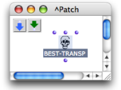
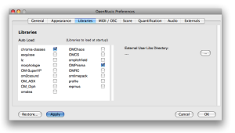

Extra Libraries
In addition to the standard OM functionalities, extra tools (classes, functions, etc.) can be loaded in OM in the form of external libraries.
The OM extra librarires are represented in the Libraries package in the Library window. |  |
To load a library :
- double click on the lower part of a package
-
Ctrl/ right click on a package and chooseLoad Library.
Loaded libraries show a green label : , unloaded libraries, a red label : .
Do not confuse the  Libraries package with the
Libraries package with the  User package, which is dedicated to libraries specifically programmed by the user.
User package, which is dedicated to libraries specifically programmed by the user.
Location of the Libraries
The |

Extra libraries can also be added by the user and loaded in OM (see section below).
A number of them, written by the OM users or developers, can be downloaded on the OpenMusic page.
Using Libraries
Once a library is loaded, classes and functions can be dropped to a patch editor
|

If a patch contains functions or classes pertaining to a user library, the user will be asked if the library must be loaded or not when opening the patch. |
Choose |  |
The library can still be loaded afterwards. In this case, relaod the patch as well using the menu File / Last Saved in order to find the original patch boxes again.
User libraries, including remote and external libraries, can be loaded automatically at startup.
|  |
Adding External Libraries
Additional directories can be added and specified to store extra libraries, via the
|  |
The external libraries present in these directories will be displayed in the
libraries
package  .
.
Use File / Refresh Libraries Package in order to update the contents of the
libraries
package contents.
Extra libraries can also be imported from any location to the Libraries package. These libraries are considered as "remote" libraries.
 | To import a remote library to the Library window,
|
Select the folder of the library you want to import and choose |
Remote libraries appear in the Libraries package as well, just like any other extra libraries. |  |
If you change the location of a library directory after it's been added in the Library window, OM won't be able to load the library.